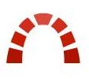

<div class="backlog-page">
  <div class="redmine-title">
    <ion-icon name="logo-buffer"></ion-icon><div>Redmine</div>
  </div>
  <div class="redmine-subtitle">
    <ion-item>
      <ion-thumbnail item-left>
        
      </ion-thumbnail>
      <p>The following data is obtained from redmine.</p>
    </ion-item>
  </div>
  <ion-card>
    <ion-item class="backlog-title">
      <ion-label class="backlog-title-name">BackLog</ion-label>
      <ion-label class="backlog-title-detail" (click)="goBackLogDetails()">
        <p class="backlog-title-detail-name">Details</p>
        <ion-icon name="md-more"></ion-icon>
      </ion-label>
    </ion-item>
    <ion-card-content>
      <ion-grid>
        <ion-row>
          <ion-col width-33>
            <div>
              <div>Initial Estimate</div>
              <div class="estimate-value">{{state?.screen?.backLogResponse?.initValue}}</div>
            </div>
          </ion-col>
          <ion-col width-33 center class="estimate-value-border">
            <div>
              <div>Planed Estimate</div>
              <div class="estimate-value">{{state?.screen?.backLogResponse?.planedValue}}</div>
            </div>
          </ion-col>
          <ion-col width-33>
            <div>
              <div>Time Reported</div>
              <div class="estimate-value">{{state?.screen?.backLogResponse?.reportedValue}}</div>
            </div>
          </ion-col>
        </ion-row>
      </ion-grid>
      <ion-item>
        <ion-label>
          <div>
            <label class="degree-title">Completion Degree</label>
          </div>
          <div>
            <label class="degree-content">{{state?.screen?.backLogResponse?.completed}} of {{state?.screen?.backLogResponse?.backLogTotal}}</label>
          </div>
          <div>
            <label class="degree-content">Backlogs Completed</label>
          </div>
        </ion-label>
        <ion-label class="backlog-canvas-area" *ngIf="state != null && state.screen != null">
          <canvas baseChart class="canvas"
                  [chartType]="state?.screen?.chartType"
                  [datasets]="state?.screen?.dataSets"
                  [options]="state?.screen?.options"
                  [colors]="state?.screen?.colors">
          </canvas>
        </ion-label>
      </ion-item>
    </ion-card-content>
  </ion-card>
</div>
